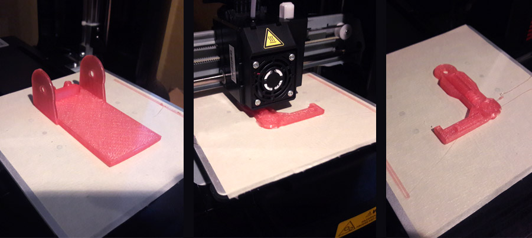

The Carry-it 2000 project embodies both novelty and utility. This project was produced by using a 3 dimensional construction of plastic parts, moving parts, casted parts, and stock parts
The final product can hold objects such as post-it notes, business cards or pens while bringing delight to those who enjoy retro-inspired robots design. Target users for this product may place the Carry-it 2000 on their workstation desk or home office
For design inspiration I collected images of retro robot designs and common desktop organizing products
Technical documentation
Analog design stage
The earliest stage of the project involved the drafting of concept sketches inspired by curated design inspration images. In addition to visual design possibilities, the sketches explored ways in which the arms could articulate, how they would be affixed, and the freedom of movement needed to meet the design intention
From the sketches, a cardboard construction prototype was made as a proof of concept for this project. The prototype provides a sense of size, shape and movement that 2 dimensional sketches can not
The prototype was carefully measured with a micrometer to understand exact measurements before moving into CAD design
Helpful tip
In almost all cases one should take the initial mock-up step before investing design time into a CAD program. The reason being, often times a 3d printed part is produced that does match the size one expects, or has collision problems not easily spotted in the CAD program alone
Digital design stage
The Carry-it 2000 project required the use of CAD programs that can create 3 dimensional parts. My choice for CAD programs for this project included Rhino 6 in combination with Grasshopper
Using the dimensions recorded from the micrometer measurements of my cardboard mockup, I created the 3d models of my parts in Rhino
Rhino 6: Considering the project objectives of creating a product that had visual appeal with moving parts, Rhino's ease of creative modeling stood out as the best CAD program for this project. I used Rhino to create the robot parts including the torso, head, arms, and base "mold of the mold"
Grasshopper: Some parts of the Carry-it 2000 have the appearance of gears or tire tread and require nuanced parametric control for their creation. For this reason, Grasshopper stood out as the clear choice for the tire/gear forms. The gear and tread discs that represented the robots “wheels” were created in grasshopper and merged into the Rhino file for the final form
Final Rhino + Grasshopper files were exported from Rhino as .stl files and imported into XYZ printing, the required interface that sends files to the da Vinci Mini 3d Printer
3d printing of robot parts was achieved using a da Vinci Mini 3d Printer printer. The da Vinci Mini 3d Printer received the print data from my Microsoft Surface via USB cable
The XYZ printing interface was used to import the .stl files and those files were sent to the da Vinci Mini 3d Printer

Helpful tips
3d printing is very time consuming. Smaller parts take up to 45 minutes, while larger parts, say a 4x4x4 cube will take up to 6 hours. Take this into consideration when you make your production timeline
3d Prints must be monitored: An unmonitored 6 hour print of the robot base failed when the filament had tangled itself under a loop on the spool, seizing the loader. This could have been easily remedied if I was present to adjust the filament as it was loading. I advise to never leave prints attended, but understand this is a challenge due to their long print times
3d printers frequently do not work properly and it can be very difficult to determine why. Prepare yourself for this by reading all documentation and finding helpful resources online relating to operation and maintenance
Silicon mold creation
The base of the robot in was cast in plaster which adds more weight for improved stability. Also, the base requires a large amount of filament to produce and very lengthy print times, so for future replication of this part casting is best
The silicone mold cretion process begins by 3d printing a “mold of the mold”. This part was designed in Rhino and sent to the 3d printer. Upon final print of the “mold of the mold”, I prepared the Smooth-On Oomoo 30 in the following steps:
Mixed 1:1 ratio of Oomoo Part A and Part B in a plastic container
Mixed Part A and Part B for 30 seconds
Poured blended silicone mixture into 3d printed mold
Let mixture for 6 hours to cure, per the directions
Removed silcone mold from the 3d printed “mold of the mold”
Casting
The Perfect Cast plaster mix is mixed and poured into the mold by following these steps
Mixed Perfect Cast plaster. 3 parts Perfect Cast, 1 part water
Poured Perfect Cast plaster mixture into silicone mold
Let Perfect Cast plaster mixture set for 1 hour until cured
Removed base part from the mold
Finishing
To maintain a high standard of design and finish, I chose to spray paint of the non uniform color and textured parts with a metallic finish to give the design a more robot feel. For smooth articulation of the arms, I used rubber washers as stock parts at the shoulders. Also, to add an additional layer of design quality I created 2d decals in Adobe Illustrator to emulate retro robot toys and novelties
With all of the parts required to create the Carry-it 2000, the next phase was to fabricate the pieces together. I did this by following these steps:
Set out my pieces on the table
Placed a rubber washer between the robot torso and shoulder
Secure the two parts together with a press fit rivet
Tested the movement of the arms - success
With the arms secure, pressed the robot torso into the cast base
Secured the decals with double stick tape
Controlled movement test
Arms stay in place, but can rotate at the shoulders with controlled motion
Bill of materials
Rhino 3d CAD program 90 day trial: Free
Grasshopper visual programming language for Rhino: Free
Microsoft Surface Pro: $999.95
da Vinci Mini 3D Printer: $179.95
da Vinci Mini 3D Printer filament: $29.95
Smooth-on silicone mold trial unit: $27.85
Cast plaster: $10.59 per per 2lb bag, 2 recommended
Metallic spray paint: $3.99
Press fit rivets and rubber washers: $2.76
Double-stick tape: $2.99
Technical implementation
For this project, I applied the best practices I learned in class in the following areas:
Utilized CAD software learned in class (Rhino)
Utilized parametric control program software learned in class (Grasshopper)
Operated and maintained a 3d printer - da Vinci Mini 3d Printer
Applied industry standard 2d and 3d design and fabrication techniques
Created, imported and exported files needed for 3d printing, e.g. .stl, .dxf files
Applied the techniques of sketching and proof of concept
Created and followed a detailed time management plan
Created and followed a detailed bill of material plan
Leveraged contingency planning
Documented my process in such a way others could replicate this project, and published the techniques online
Effectively produced project deliverables on time while meeting all project requirements
Execution
My planning paid off as I did not drastically deviate from my Final Project Proposal. The only deviation was that I failed call out in my initial proposal that press-fit rivets count as stock parts which was part of the Proposal design. For a high standard of design and finish, I feel I achieved that through of the painting of non uniform colored raw materials, enjoyable 3d design along with utility, and with additional decal design I created in Adobe Illustrator
Application of techniques
For this project, I applied 6 of the techniques I learned in class as called out by the final project instructions
CAD design using Rhino
Parametric design using Grasshopper
3d printing
Moving Parts
Implemtation of Stock Parts
Molding and Casting
Peer-attribution
Special thanks to @Dawn Ferguson, for sharing her example of a project proposal in class!